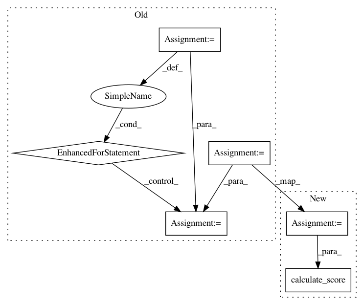

43762a5f340f1d9a202e8deb6f6c57673269c8ce,autosklearn/evaluation/util.py,,calculate_score,#Any#Any#Any#Any#Any#Any#Any#,14
Before Change
score = dict()
if task_type in REGRESSION_TASKS:
// TODO put this into the regression metric itself
prediction = sanitize_array(prediction)
for metric_ in get_all_known_metrics(task_type):
score[metric_.name] = metric_.calculate_score(solution, prediction)
else:
if task_type in REGRESSION_TASKS:
// TODO put this into the regression metric itself
prediction = sanitize_array(prediction)
After Change
score = dict()
if task_type in REGRESSION_TASKS:
// TODO put this into the regression metric itself
cprediction = sanitize_array(prediction)
for metric_ in REGRESSION_METRICS:
score[metric_] = regression_metrics.calculate_score(
metric_, solution, cprediction)
else:
for metric_ in CLASSIFICATION_METRICS:
score[metric_] = classification_metrics.calculate_score(
In pattern: SUPERPATTERN
Frequency: 3
Non-data size: 6
Instances
Project Name: automl/auto-sklearn
Commit Name: 43762a5f340f1d9a202e8deb6f6c57673269c8ce
Time: 2017-02-14
Author: feurerm@informatik.uni-freiburg.de
File Name: autosklearn/evaluation/util.py
Class Name:
Method Name: calculate_score
Project Name: automl/auto-sklearn
Commit Name: 97c4e00748438fca8058d48f515bafb1ce91ea93
Time: 2014-12-22
Author: feurerm@informatik.uni-freiburg.de
File Name: AutoML2015/models/evaluate.py
Class Name:
Method Name: evaluate
Project Name: automl/auto-sklearn
Commit Name: 06b801033943e72755612117f276751f2ae4d5dc
Time: 2016-03-22
Author: a.domashnev@gmail.com
File Name: autosklearn/evaluation/util.py
Class Name:
Method Name: calculate_score